Breaking the cycle—Colleagues are all you need
Technion – Israel Institute of Technology
arXiv 2020 [paper]
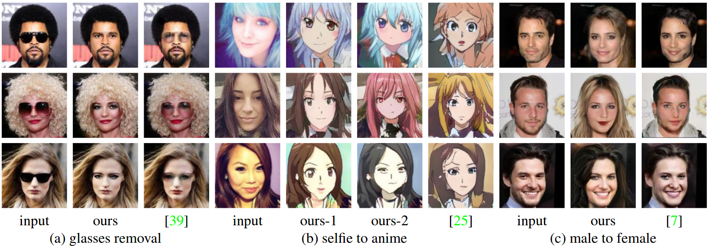
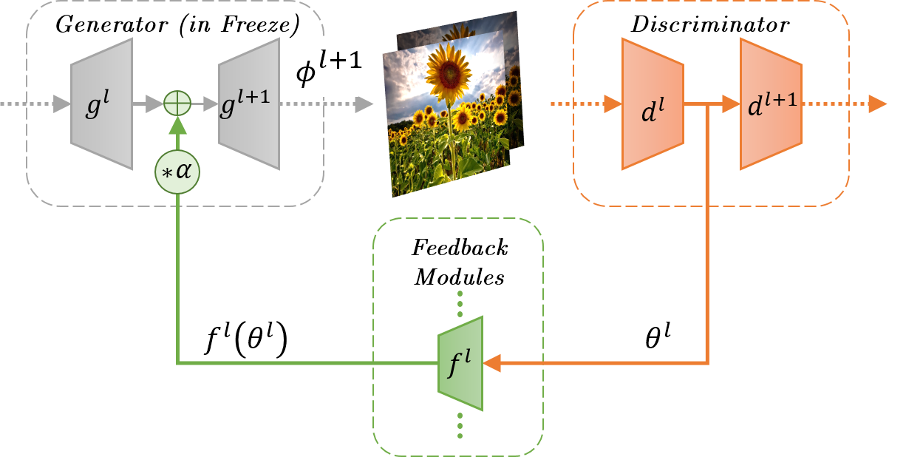
The feedback framework: The proposed feedback module passes information from the discriminator to the
generator thus “learning” how to correct the generated image in order to make it more real in terms of the discriminator score.
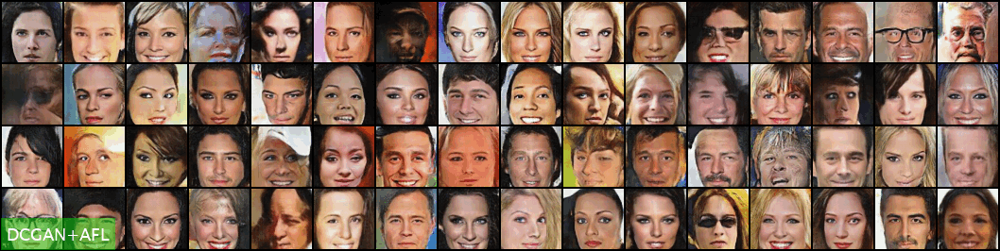
Ori Nizan
Ayellet Tal
Code [GitHub]
Abstract
Applications
Faces generated with AFL show significantly fewer artifacts, making clear the advantage of using AFL.
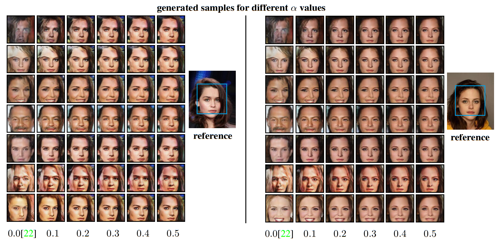
Generation with reference: Results of using feedback-switching-pipeline. The feedback modules make the generated image similar to the reference one, and with fewer artifacts.First column is DCGAN baseline.
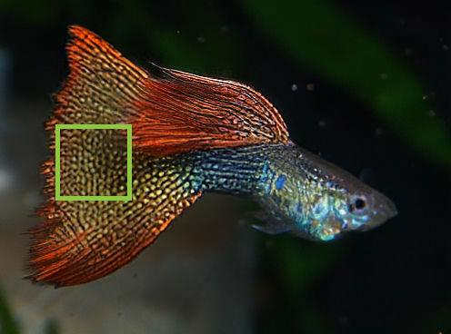
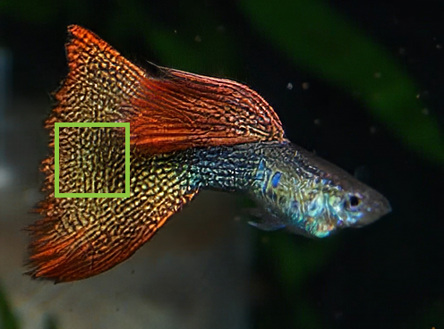
SOTA Baseline
Ours
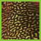
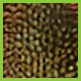
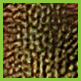
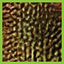
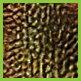
GT
Baseline
1st iter
2nd iter
3rd iter
Breaking the cycle — Colleagues are all you need
Try Our Code
Code of the experiments described in our paper is available in [GitHub]